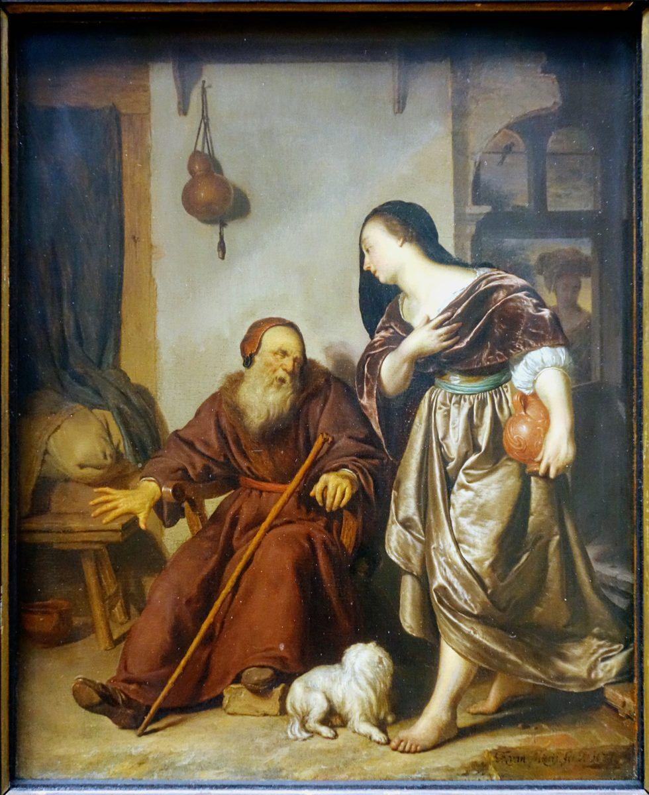

1 Reyes 14 — La Traducción Mister

1 Reyes 14:4–6. El jarro puede ser el frasco de miel. El bastón, el perro, las calabazas y la figura de la ventana son cosa del pintor, y los versículos no dicen cómo iba vestida. Mieris la pone descalza en primer plano, y es el ruido de sus pies lo que la delata.

Notas del traductor — versículo por versículo
Dos relatos. La Biblia griega cuenta esta historia en otro lugar y de otra manera. En la tradición del Vaticano, los versículos 1–20 no están aquí; la historia está antes, entre los largos añadidos después de 12:24, y difiere en los detalles. Allí la madre tiene nombre, Ano, hermana de la esposa de Sisac; el profeta tiene sesenta años; y se envía a un siervo a recibirla (véase la nota de 1 Reyes 12, ya en estas páginas). Las ediciones que imprimen aquí los versículos 1–20 los toman del Alejandrino. Esta página traduce el hebreo e informa del resto.
Envía a Silo. Jeroboam tiene dos becerros de oro, una casa de lugares altos y sacerdotes hechos por él (1 Reyes 12:28–31, ya en estas páginas), y cuando su hijo enferma no envía a ninguno de ellos. Envía al viejo profeta que le dio el reino. Abías significa «mi padre es Jah», de modo que el hijo del que hizo los becerros lleva el nombre divino, y en hebreo está a una letra de Ahías, «mi hermano es Jah». «Para que no sepan»: el hebreo tiene en el rollo atti con la lectura at, una grafía antigua de «tú» dicho a una mujer; el sentido es el mismo. El verbo de «disfrázate» es shanah, cambiar. Ella debe cambiarse para engañar a un hombre que, según dice el versículo 4, no puede verla.
Diez panes y un frasco. Se espera un presente para un profeta (1 Samuel 9:7, ya en estas páginas), y este es de campesina, no de reina. «Tortas de migas» es niqqudim: como palabra para comida está en tres versículos de la Biblia hebrea, y los otros dos son el pan de los gabaonitas, «seco» y «desmenuzado» (Josué 9:5, 12, ya en estas páginas), pan traído también para engañar. La palabra es incierta. La RV 1909 dice «turrones», la RV60 «tortas», la NVI «algunas tortas» y la TNM 1987 «tortas rociadas». El «frasco» es baqbuq, la vasija que Jeremías romperá (Jeremías 19:1).
«Sus ojos se habían quedado fijos». «Ahías no podía ver, porque sus ojos se habían quedado fijos a causa de su vejez»: el hebreo es la frase que se dice de Elí, también en Silo, que tampoco podía ver (1 Samuel 4:15, ya en estas páginas). El verbo es qum, levantarse o estar en pie, el mismo de «Levántate» en el versículo 2 y «se levantó» en este: ella se levanta, y los ojos de él se han detenido. La TNM 1987 dice «habían quedado fijos», y esta página la sigue. La RV 1909 y la RV60 dicen «oscurecido», y la NVI «estaba ciego».
«Irreconocible». «Estará haciéndose irreconocible»: el participio mitnakker está en dos versículos de la Biblia hebrea, los versículos 5 y 6 de aquí. La forma del verbo es la de José ante sus hermanos, que «se hizo irreconocible para ellos, y les habló con dureza» (Génesis 42:7, ya en estas páginas), y aquí vienen juntas las mismas dos palabras: ella es mitnakkerah y el mensaje es qashah. En Génesis el que se esconde es el que conoce. Aquí la que se esconde es la conocida. El verbo pertenece a nakar, reconocer. La TNM 1987 dice «estará arreglándose para que no se la reconozca», la TNM 2019 y la RV60 «disfrazada», la RV 1909 «disimulada», y la NVI «haciéndose pasar por otra».
El ruido de sus pies. «Así y así le hablarás»: al lector no se le dice qué. A un ciego se le ha dicho quién viene, y él la oye en la puerta y la llama por el único título que ella vino a esconder: «Entra, esposa de Jeroboam». Los pies vuelven en el versículo 12.
«Algo duro». «Yo soy enviado a ti con algo duro»: el hebreo tiene solo el adjetivo, qashah, «duro», y es la palabra de cómo respondió Roboam al pueblo (1 Reyes 12:13, ya en estas páginas). El reino se dividió por una respuesta dura, y ahora el rey que recibió las diez tribus recibe una. La RV 1909 y la RV60 dicen «revelación dura», la TNM 1987 «un mensaje severo», y la NVI «malas noticias».
Lo que se ofreció. «Te alcé de en medio del pueblo, y te hice caudillo»: la palabra es nagid, el título dado a Saúl (1 Samuel 9:16, ya en estas páginas). «Y rasgué el reino»: qara, el verbo del manto (1 Reyes 11:30–31, ya en estas páginas), dicho por el mismo hombre. Él había ofrecido a Jeroboam «una casa fiel» si guardaba los mandamientos «como hizo David mi siervo» (11:38, ya en estas páginas), y ahora la condición se le lee como veredicto.
«Otros dioses». Jeroboam presentó los becerros como «tus dioses» que sacaron a Israel de Egipto (1 Reyes 12:28, ya en estas páginas), y Ahías los llama «otros dioses e imágenes fundidas». El sustantivo de las imágenes es el del «becerro de fundición» (Éxodo 32:4, ya en estas páginas). El adjetivo de «otros dioses» es plural en hebreo. La RV60 dice «dioses ajenos», la NVI «otros dioses», y la TNM 1987 y la TNM 2019 «otro dios».
«Detrás de tu espalda». «Y a mí me has echado detrás de tu espalda»: el hebreo pone «a mí» primero. «Detrás de tu espalda» está en tres versículos de la Biblia hebrea: aquí; en Ezequiel, de Jerusalén, «te olvidaste de mí y me echaste detrás de tu espalda» (Ezequiel 23:35); y en el cántico de Ezequías, de Dios, «echaste todos mis pecados detrás de tu espalda» (Isaías 38:17). La NVI lo suaviza con «me has dado la espalda». La RV60 dice «me echaste tras tus espaldas», y la TNM 1987 «echado detrás de tu espalda».
Todo varón. La frase mashtin be-qir está en seis versículos de la Biblia hebrea. Este es el primero de los cuatro de Reyes, cada uno contra la casa de un rey, y David juró lo mismo contra Nabal y no lo cumplió (1 Samuel 25:22, ya en estas páginas). La RV 1909 lo conserva como «todo meante á la pared» y la TNM 1987 como «cualquiera que orina contra una pared»; la RV60 dice «todo varón», y la NVI «hasta el último varón». El par atsur ve-azuv está en cuatro versículos de la Biblia hebrea, y no se sabe qué significa. Esta página mantiene su traducción de Deuteronomio 32:36 (ya en estas páginas), «encerrado» y «libre». Es claro que el par significa «todos». Qué dos clases de personas nombra sigue abierto: la RV 1909 dice «así el guardado como el desamparado», la RV60 «así el siervo como el libre», y la TNM 1987 «un imposibilitado e inútil».
Quemada como estiércol. «Quemaré tras la casa de Jeroboam, como se quema el estiércol hasta que se acaba»: el verbo es ba’ar, el de la fórmula «quemarás el mal de en medio de ti» (Deuteronomio 13:6, ya en estas páginas), y aquí el mal que se quema es la familia de un rey. El estiércol era combustible (Ezequiel 4:12, 15). El estante en español no quema: la RV 1909, la RV60 y la NVI dicen «barreré», y la TNM 1987 «barreré de modo completo». La palabra para estiércol, galal, comparte sus letras con gillulim, la palabra para ídolos que usará este libro (1 Reyes 15:12, ya en estas páginas). Si eso es más que una coincidencia de letras no lo dice el versículo.
Los perros. «Se lo comerán los perros»: quedar sin sepultura era la última deshonra, y la frase completa, perros en la ciudad y aves en el campo, está en tres versículos de la Biblia hebrea, todos con la misma forma: aquí, contra la casa de Jeroboam; contra la de Baasa (1 Reyes 16:4, ya en estas páginas); y contra la de Acab (1 Reyes 21:24). El hombre que cumpla esta sentencia recibirá la suya.
Sus propios pies. «Cuando tus pies entren en la ciudad, el niño morirá»: él oyó sus pies a la puerta, y ahora son el reloj. El niño vivirá exactamente lo que tarde su madre en volver a casa, y el versículo se lo dice antes de que salga. Jeroboam dice «el muchacho», na’ar, y el profeta «el niño», yeled.
Una sepultura como misericordia. «Solo este, de los de Jeroboam, entrará en sepultura»: al varón de Dios de Judá se le dijo que su cadáver no entraría en la sepultura de sus padres (1 Reyes 13:22, ya en estas páginas), y es la misma palabra. En esta casa, morir joven y ser sepultado es la buena noticia. «Algo bueno para con Jehová»: davar tov, y el texto no dice qué era. La TNM 1987 dice «algo bueno para con Jehová», la RV60 «alguna cosa buena delante de Jehová», y la RV 1909 «alguna cosa buena de Jehová», que cambia el sentido.
«Este es el día; ¿y qué? Ya ahora». Las palabras finales u-meh gam attah están en un versículo de la Biblia hebrea, y cómo leerlas, igual que las dos palabras anteriores, es incierto. Esta página deja el hebreo tan roto como está. La RV 1909 dice «¿y qué, si ahora?», la TNM 1987 «¿y qué si ahora mismo?», la RV60 «y lo hará ahora mismo», la NVI «De ahora en adelante», y la TNM 2019 «y ese día ya está aquí»: son conjeturas. No se nombra al rey. Será Baasa (1 Reyes 15:27–29, ya en estas páginas).
La caña y el Río. «Como se mece la caña en el agua»: el profeta pasa de una casa a todo el norte. «Arrancará a Israel» es natash, el verbo de la advertencia de Deuteronomio (Deuteronomio 29:27, EN 28, ya en estas páginas). «Este buen suelo» es el lenguaje de la despedida de Josué (Josué 23:13, 15, ya en estas páginas). «Más allá del Río» es donde, según Josué, vivieron los padres de Israel sirviendo a otros dioses, antes de que Abraham fuera tomado de allí (Josué 24:2–3, ya en estas páginas), de modo que la frase los devuelve a donde empezó la historia, y así sucederá (2 Reyes 17:6). La TNM 1987 dice «más allá del Río», y la RV60 y la NVI nombran el Éufrates. Las Aserás son las del pueblo, no solo las del rey. La RV 1909 dice «sus bosques», la RV60 «sus imágenes de Asera», y la TNM 1987 «sus postes sagrados».
Empieza el estribillo. «Los pecados de Jeroboam, que él pecó y que hizo pecar a Israel»: es la primera vez que se oye la frase. Hecheti et Yisrael, «hizo pecar a Israel», está en dieciocho versículos de la Biblia hebrea, casi todos como juicio sobre un rey del norte tras otro, medidos con este hombre.
Tirsa. «Y llegó a Tirsa»: lo último que supo el lector es que Jeroboam edificaba Siquem y Penuel (1 Reyes 12:25, ya en estas páginas), y el texto no dice cuándo se trasladó. Tirsa está en la lista de los reyes vencidos por Josué (Josué 12:24, ya en estas páginas), y será la sede de los siguientes reyes de Israel (1 Reyes 15:33, ya en estas páginas).
El umbral. «Al llegar ella al umbral de la casa, el muchacho murió»: Ahías dijo «en la ciudad», y el narrador la sigue hasta la puerta. Ella llega al umbral, y él está muerto. La RV 1909, la RV60 y la TNM 1987 dicen «umbral de la casa», que es el hebreo. «Conforme a la palabra de Jehová»: el versículo señala de inmediato el cumplimiento. El resto de la sentencia tarda más (1 Reyes 15:29, ya en estas páginas).
Un libro que no tenemos. «El libro de los hechos de los días de los reyes de Israel»: la frase «libro de los hechos de los días» está en treinta y siete versículos de la Biblia hebrea, treinta y tres de ellos en Reyes, y los primeros son estos, los versículos 19 y 29. No es el libro que llamamos Crónicas, aunque ese es también el nombre hebreo de Crónicas; es una fuente a la que el autor de Reyes podía enviar al lector, y no ha sobrevivido. La RV 1909 y la RV60 dicen «el libro de las historias», la NVI «el libro de las crónicas», y la TNM 1987 «el libro de los asuntos de los días». «Cómo peleó»: un reinado de veintidós años, y las batallas quedan para otro libro. Este capítulo ha dado más palabras a un niño enfermo que a todo eso.
Ninguna sepultura. «Y se acostó con sus padres, y Nadab su hijo reinó en su lugar»: compárese el versículo 31, donde Roboam se acostó con sus padres «y fue sepultado». En Jeroboam falta la segunda parte, y eso concuerda con lo que dijo Ahías en el versículo 13. Es la frase más corta que el libro usa a veces, y la ausencia quizá no signifique nada, pero ahí está. El turno de Nadab es breve (1 Reyes 15:25–28, ya en estas páginas).
Cuarenta y un años. El relato vuelve a Judá. Salomón reinó cuarenta años (1 Reyes 11:42, ya en estas páginas), de modo que un hijo de cuarenta y uno nació antes de que su padre subiera al trono, y los «jóvenes» de Siquem no eran jóvenes (1 Reyes 12:8, ya en estas páginas). La Biblia griega da dos respuestas. En este versículo concuerda con el hebreo, cuarenta y uno y diecisiete; en los añadidos después de 12:24 de la tradición del Vaticano dice dieciséis y doce, y llama a su madre Naanán, hija de Ana hijo de Naas, rey de Amón. «La ciudad que Jehová había escogido» es el lenguaje de 1 Reyes 11:36 (ya en estas páginas).
Naama la amonita. «Naama la amonita» está en tres versículos de la Biblia hebrea: dos en este capítulo, los versículos 21 y 31, y uno en Crónicas (2 Crónicas 12:13). De aquí en adelante, Reyes da el nombre de la madre de casi todos los reyes de Judá, y el de ella va primero y va dos veces. Es una de las mujeres amonitas de 1 Reyes 11:1 (ya en estas páginas), ante cuyo dios se postró Salomón (11:33). Deuteronomio dice que un amonita no entrará en la asamblea de Jehová (Deuteronomio 23:4, ya en estas páginas), y todos los reyes posteriores de la casa de David descienden de esta mujer. El versículo no comenta nada de eso.
«Lo hicieron sentir celos». «Y Judá hizo lo malo»: el hebreo tiene al pueblo. La Biblia griega tiene «Roboam hizo lo malo», y Crónicas también tiene «él» (2 Crónicas 12:14). Las lecturas difieren, y los verbos plurales que siguen encajan con el hebreo. Vayqan’u oto es el verbo del Cántico de Moisés, «Ellos me hicieron sentir celos con un no-dios» (Deuteronomio 32:21, ya en estas páginas). La TNM 1987 dice «lo incitaron a celos», la NVI «provocaron los celos», y la RV 1909 y la RV60 pierden los celos con «enojáronle» y «le enojaron». «También ellos»: el hebreo es enfático, y al sur se le ha contado largamente lo que hizo el norte. «Debajo de todo árbol frondoso» es el lugar que Deuteronomio mandó destruir (Deuteronomio 12:2, ya en estas páginas), y «piedras alzadas» y «Aserás» son las cosas de Deuteronomio 7:5 (ya en estas páginas).
⚠ Los «sodomitas» de la Reina-Valera. El hebreo es el singular qadesh, «un hombre consagrado», de qadosh, «santo», y esta página mantiene su traducción de Deuteronomio 23:18 (ya en estas páginas), donde la palabra tiene una nota completa. La RV 1909 y la RV60 imprimen «sodomitas». Esa palabra se ha leído como si la Biblia nombrara y condenara a los hombres que tienen relaciones con hombres, en un versículo que nada dice de Sodoma ni de ningún compañero; la palabra describe a un hombre adscrito a un santuario. Traducciones y comentarios lo han tomado desde hace mucho por un prostituto de culto: la NVI dice «hombres que practicaban la prostitución sagrada», y la TNM 1987 «el prostituto de templo». Es una lectura que la palabra misma no decide, y las pruebas a su favor se discuten. La Biblia griega de la tradición del Vaticano tiene syndesmos, «conspiración», otra idea por completo, que quizá refleje otra palabra hebrea.
Sisac. «Sisac rey de Egipto subió contra Jerusalén»: es el hombre que dio refugio a Jeroboam (1 Reyes 11:40, ya en estas páginas). El rollo escribe el nombre Shushaq y la lectura es Shishaq; la grafía con vav está en un versículo de la Biblia hebrea. El griego tiene Sousakim. Reyes da cinco años, un versículo y ninguna razón. Crónicas da la razón, una Judá infiel; mil doscientos carros y sesenta mil jinetes; ciudades fortificadas tomadas; y al profeta Semaías (2 Crónicas 12:2–8).
Sheshonq I en Karnak. Suele identificarse con el rey egipcio Sheshonq I. Esa identificación viene de fuera del texto, y es la opinión común: los nombres se parecen, y ese rey dejó el registro de una campaña en Canaán, tallado en el templo de Amón en Karnak, con una lista de más de ciento cincuenta lugares, y en Meguido se halló un trozo de una estela con su nombre. Esto se informa aquí según las descripciones publicadas, no se ha leído. La lista, tal como se conserva, tiene muchas lagunas. No nombra a Jerusalén, ni a Roboam ni a Jeroboam, y los estudiosos explican ese silencio de distintas maneras: el nombre puede haberse perdido, un pago puede haber librado a la ciudad, o la campaña puede no haber sido como la cuenta la Biblia. Esta página no decide. Según el cálculo habitual, todo esto es hacia el 925 a. C.
«Lo tomó todo». «Los escudos de oro que Salomón había hecho»: la frase está en dos versículos de la Biblia hebrea, aquí y en Crónicas (2 Crónicas 12:9). Son los trescientos de 1 Reyes 10:17 (ya en estas páginas), de tres minas cada uno, puestos en la Casa del Bosque del Líbano, y la palabra es magen. Todo ese oro duró cinco años del reinado de su hijo. La Biblia griega de la tradición del Vaticano añade las lanzas de oro que David tomó de los siervos de Hadad-ezer, y en 2 Samuel 8:7 dice que Sisac se las llevó. El hebreo no tiene ninguna de las dos observaciones (2 Samuel 8:7, ya en estas páginas).
Bronce. «Y el rey Roboam hizo en su lugar escudos de bronce»: el desfile sigue, y solo ha cambiado el metal. Nechoshet es bronce; la RV60 y la NVI dicen «bronce», la RV 1909 «metal», y la TNM 1987 «cobre». «Los corredores» son los ratsim, la guardia a la que Saúl mandó matar a los sacerdotes (1 Samuel 22:17, ya en estas páginas). La TNM 1987 dice «corredores», y esta página la sigue; la RV 1909 y la RV60 dicen «los de la guardia», y la NVI «la guardia». «La cámara de los corredores», ta ha-ratsim, está en dos versículos de la Biblia hebrea, aquí y en Crónicas (2 Crónicas 12:11). Los escudos salen para el paseo a la casa de Jehová y se vuelven a guardar. Los de Salomón estaban en la Casa del Bosque del Líbano, y estos se guardan en un cuarto de guardia.
Guerra «todos los días». «Y hubo guerra entre Roboam y Jeroboam todos los días»: Semaías detuvo la guerra al principio, y el pueblo escuchó (1 Reyes 12:24, ya en estas páginas). O aquello duró un tiempo o esta es otra guerra, y el texto no lo dice. La frase vuelve, curiosamente, en el reinado del hijo de Roboam (1 Reyes 15:6, ya en estas páginas). La RV 1909 y la RV60 dicen «todos los días», la TNM 1987 «siempre», y la NVI «guerra constante».
Abías y Abiam. «Y Abiam su hijo reinó en su lugar»: el hebreo aquí es Aviyam. Crónicas llama Abías al mismo rey (2 Crónicas 12:16; 13:1), el griego de aquí tiene Abiou, y la lista de Mateo tiene Abia (Mateo 1:7, ya en estas páginas). La RV 1909 y la RV60 dicen «Abiam», la TNM 1987 «Abiyam», y la NVI «Abías», que sigue a Crónicas y no a este versículo. Así, el capítulo que abrió con un Abías, heredero del norte, que murió niño, cierra con otro, heredero del sur. Y repite el nombre de su abuela, «Naama la amonita», en medio de la frase, entre la sepultura y el heredero. El griego impreso según el Vaticano no tiene esa segunda mención.
Patrones que vale la pena llevar adelante
Donde esta traducción mantiene las palabras exactas y distintas: «haciéndose irreconocible» para mitnakkerah, como en Génesis 42:7; «algo duro» para qashah, como en 1 Reyes 12:13; «sus ojos se habían quedado fijos», como en 1 Samuel 4:15; «tortas de migas» para niqqudim; «caudillo» para nagid; «rasgué» para qara; «quemar» para ba’ar, como en Deuteronomio 13:6; «el que orine contra la pared»; «encerrado o libre» para atsur ve-azuv, como en Deuteronomio 32:36; «suelo» para adamah; «el Río»; «lo hicieron sentir celos», como en Deuteronomio 32:21; «el hombre consagrado» para qadesh, como en Deuteronomio 23:18; «piedras alzadas» y «Aserás»; «corredores» para ratsim; y «Abiam», como lo tiene el hebreo.
Ecos pagados. Ahías y el manto rasgado (1 Reyes 11:29–39); la casa fiel (1 Reyes 11:38); los becerros, los lugares altos y los sacerdotes (1 Reyes 12:28–31); Sisac (1 Reyes 11:40); la respuesta dura de Roboam (1 Reyes 12:13); la edad de Roboam (1 Reyes 12:8); la sepultura de los padres (1 Reyes 13:22); los escudos de oro (1 Reyes 10:17; 2 Samuel 8:7); las mujeres amonitas (1 Reyes 11:1, 33); José irreconocible (Génesis 42:7); los ojos de Elí (1 Samuel 4:15); el pan de los gabaonitas (Josué 9:5, 12); el juramento de David contra Nabal (1 Samuel 25:22); quemar el mal (Deuteronomio 13:6); encerrado o libre (Deuteronomio 32:36); arrancados (Deuteronomio 29:27); el buen suelo (Josué 23:13, 15); más allá del Río (Josué 24:2–3); la asamblea y el amonita (Deuteronomio 23:4); el hombre consagrado (Deuteronomio 23:18); los celos (Deuteronomio 32:21); el árbol frondoso (Deuteronomio 12:2); y los corredores (1 Samuel 22:17).
Ecos plantados. Nadab y Baasa, y el fin de la casa de Jeroboam (1 Reyes 15:25–29, ya en estas páginas); los hombres consagrados expulsados, y los gillulim (1 Reyes 15:12, ya en estas páginas); la misma frase contra Baasa (1 Reyes 16:4, ya en estas páginas) y contra Acab (1 Reyes 21:24); el norte llevado cautivo (2 Reyes 17:6); «detrás de tu espalda» (Isaías 38:17; Ezequiel 23:35); y el Sisac del Cronista (2 Crónicas 12:2–16). Los demás están aún por llegar en esta traducción.
Siguiente en este libro: 1 Reyes 15 — Abiam reina tres años; Asa expulsa a los hombres consagrados y quita a Maaca de ser reina madre; paga a Ben-adad con lo que queda en los tesoros; y Baasa mata a Nadab y hiere a toda la casa de Jeroboam, conforme a la palabra de Ahías.